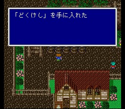
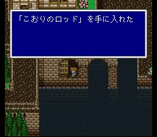
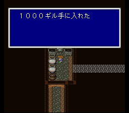

이 마을에는 원래 월스로 가는 배가 있었으나, 바람이 멈추면서 뱃길도
막혀 버린 모양입니다.
자, 그럼 오늘도 마을 싹쓸이에
여념이 없는 우리의 주인공들-

쓸 만한 거라면 얼음의 로드가 나옵니다. 속성이 있는 로드는 그 속성 마법을
강화시켜 주므로 흑마도사에게 유용하게 사용됩니다.
그리고 아이템들도
봅시다.
도구상: 포션, 해독제, 안약, 여인의 키스, 요술방망이, 금바늘, 피닉스의 꼬리깃,
텐트
무기상: 대거, 롱스워드, 로드, 지팡이
방어구상: 브론즈실드, 브론즈헬름,
브론즈아머, 동의 가슴받이, 목면의 로브
마법상: 흑마법 Lv1, 슬리플, 케알,
포이즈나, 사이레스, 프로테스
이 정도까지 왔으면 돈 걱정은 없을테니 마법들은 빠짐없이 구입하시고..
무기와 방어구가 갖고 있는 것들보단 좋은 게 많으니 보강합시다. 그리고 상태 이상이
이제부터 심심찮게 나타날 테니 약 종류들도 충분히 준비하시는게..
피아노를
안 치셨다면 치고 가세요.